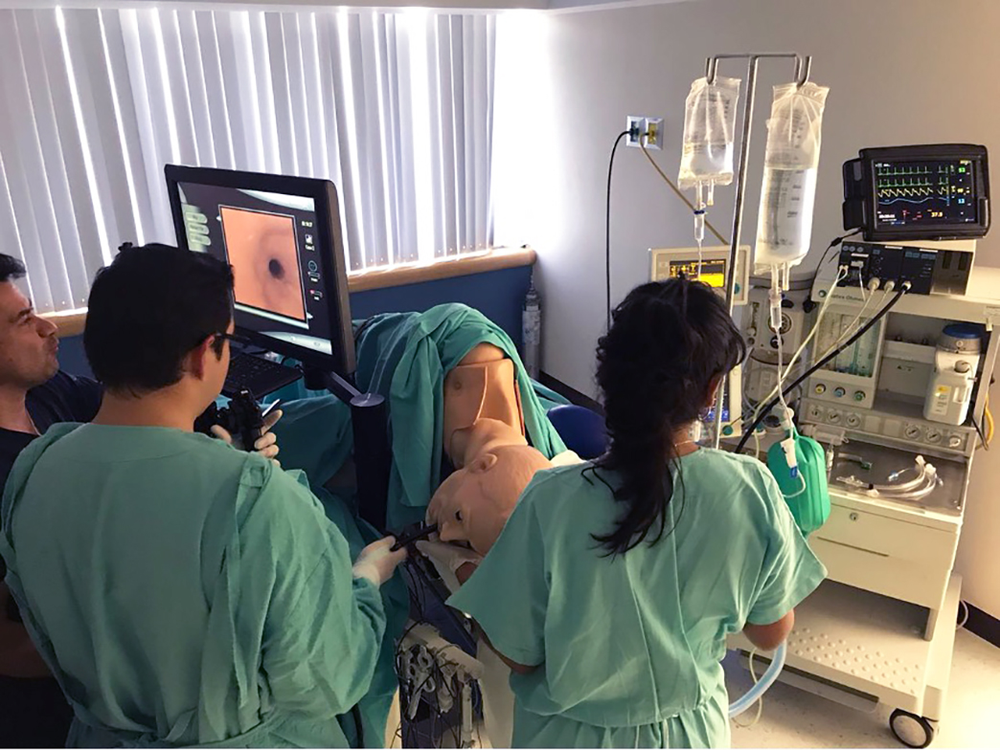
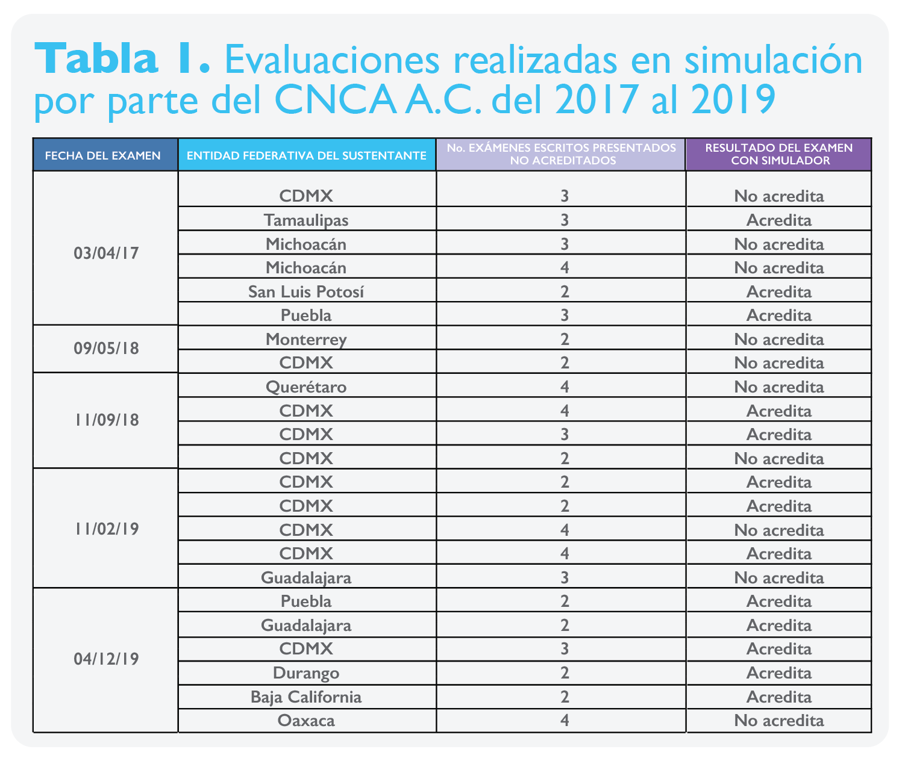

Evaluación del anestesiólogo
con experiencia
¿Es momento para emplear la simulación?
Dra. Diana Moyao García.
Presidente del Concejo Nacional
de Certificación en Anestesiología, A. C.
info@consejoanestesia.org
Dr. Rodrigo Rubio Martínez
Vocal de Subespecialidades y Capítulos del Concejo
Nacional de Certificación en Anestesiología, A. C.
info@consejoanestesia.org
La educación médica a través de la simulación ha demostrado ser una metodología educativa eficiente, generando mayor transferencia de conocimientos a la clínica que los métodos tradicionales.1,2 La simulación se puede realizar de diferentes formas con diversos grados de complejidad, por ejemplo: en el entrenamiento de tareas o destrezas para practicar una habilidad en especial; en la creación de mundos virtuales para poner en práctica conocimientos y con estos la toma de decisiones; en escenarios clínicos de alta fidelidad donde se recrean diferentes situaciones para ayudar a capacitar no solo en conocimientos sino en actitudes, toma de decisiones e incluso habilidades, entre otros aspectos.3
En México, las personas que ejercemos la anestesiología debemos certificarnos por el Consejo Nacional de Certificación en Anestesiología, A.C. (CNCA, A.C.), usualmente al salir de la residencia y posteriormente cada 5 años debemos actualizar dicha certificación. Lo más común es que estas recertificaciones se realicen por puntaje académico; sin embargo, existen cada año un grupo de especialistas en anestesiología que no obtienen el puntaje mínimo necesario y por lo tanto requieren de una evaluación de conocimientos.
En ocasiones algunos anestesiólogos han ejercido la especialidad por más de 20 años, dedicándose a un tipo de cirugías muy específicas, sin realizar otros procedimientos de alta especialidad. El problema se presenta cuando estos médicos realizan un examen que abarca los conocimientos actuales necesarios para ejercer la anestesiología en general, siendo conceptos que probablemente ya no utilicen en su ejercicio diario de la profesión y debido a esto no alcanzan el puntaje mínimo necesario para aprobar. Sin embargo, esta evaluación es de tipo sumativo, siendo un resultado de alto impacto en la vida profesional del sustentante pudiendo incluso generar la pérdida de su trabajo clínico.
La simulación ha probado ser una herramienta válida para la evaluación de conocimientos, habilidades y actitudes, pudiendo recrear las condiciones necesarias para evaluar competencias clínicas de manera estandarizada y repetitiva, sin poner en riesgo la vida o la integridad de los pacientes.4,5,6,7
Debido a lo expuesto anteriormente, el CNCA A.C. decidió, a través de su mesa directiva en el año 2017, que los especialistas que tuvieran más de 15 años de egresados pudieran presentar una evaluación a través de simulación, con el objetivo de identificar si contaban con los conocimientos, las habilidades y las aptitudes necesarias para ejercer de manera segura la especialidad. Con los resultados obtenidos en esta primera fase que consideramos satisfactorios, se decidió extender esta oportunidad a los anestesiólogos que hubieran presentado el examen escrito en más de dos ocasiones sin acreditarlo o que les faltaran pocos puntos para aprobarlo.
Estas evaluaciones se realizaron en el centro de educación por simuladores del Centro Médico ABC Observatorio, en la Ciudad de México, ya que cuenta con el equipamiento necesario para llevar a cabo este tipo de simulación. Los escenarios clínicos presentados fueron validados por el CNCA A.C., para cumplir con los objetivos requeridos y para la evaluación, se utilizaron listas de cotejo con elementos observables que evitaban el juicio o la interpretación del observador. Algunos ejemplos de los escenarios clínicos de alta fidelidad implementados fueron el de anafilaxis en sala de operaciones, el de abordaje del paciente con vía aérea difícil o el de valoración preanestésica, entre otros.

De abril del 2017 a diciembre del 2019, hemos aplicado el examen en simulador en 5 ocasiones con los siguientes resultados: se realizó la evaluación a 23 sustentantes, 9 de la Ciudad de México (39%), Michoacán 2 (8.6%), Jalisco 2 (8.6%); y un sustentante de cada una de las siguientes entidades: Tamaulipas, San Luis Potosí, Puebla, Nuevo León, Durango, Baja California y Oaxaca. De los cuales 13 (56%) han acreditado la evaluación y 10 (44%) no la han acreditado.
Aunque en el resultado global solo 56% de los sustentantes ha acreditado el examen en simulador, consideramos que el resultado es favorable, ya que la experiencia generada en el CNCA, A.C. nos ha permitido mejorar los escenarios clínicos y la evaluación, lo que se ha visto reflejado en un aumento de acreditación de un 50% en la primera aplicación a un 83% en la última. Los anestesiólogos han demostrado, por medio de esta evaluación, que tienen competencias básicas generales para ejercer la profesión de manera segura y haciéndolo replican lo que practican día a día por medio de una simulación de alta fidelidad. Otra ventaja adicional identificada es que nos ha permitido eliminar la barrera tecnológica que representa para algunos médicos un examen en computadora o la condición estresante de sustentar un examen de conocimientos en varias ocasiones.

En México la evaluación de competencias a través de simulación en el posgrado está en etapas iniciales; sin embargo, es una metodología que debemos comenzar a incorporar con mayor frecuencia debido a que puede evaluar áreas que un examen tradicional no explora. Además, es una herramienta que puede ayudar a especialistas, que tienen años de experiencia, a demostrar que aún son competentes en el ejercicio de la especialidad a pesar de no haber aprobado un examen de conocimientos generales. Esto es debido a que la evaluación se presenta como una experiencia simulada, en donde se integra un diagnóstico con base en varios datos clínicos, dejando a un lado lo únicamente teórico e integrando destrezas y aptitudes, mismas que llevan años practicando a diario al ejercer la especialidad.
Conclusión
La simulación es una metodología educativa que ha demostrado su utilidad en la medicina desde el pregrado hasta la educación médica continua de posgrado. La experiencia en la evaluación de competencias utilizando la simulación de alta fidelidad a nivel de certificación, por parte del Consejo Nacional de Certificación en Anestesiología, A.C. ha sido en general positiva. Si bien, sería deseable ofrecer una evaluación por competencias con simulación como parte de la certificación en anestesiología, resulta complejo por diferentes factores, uno importante es que resulta difícil de implementar en poblaciones que superan el millar como en nuestra especialidad, además de que incrementaría el tiempo y el costo de la evaluación. Sin embargo, nos gustaría seguir trabajando para ofrecer otras opciones que favorezcan la evaluación de los anestesiólogos mayores de 65 años o con más de 15 años de egreso, lo que nos permitirá generar una mayor experiencia con las herramientas que nos ofrece la simulación, a la par de su utilización con mayor frecuencia en la educación médica continua de posgrado.